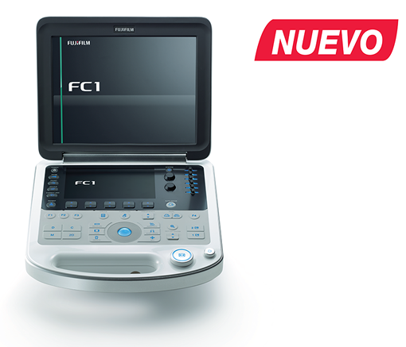

FC1
Nueva era para el diagnóstico oportuno

Registro Sanitario: 1478E2016 SSA
DESCRIPCIÓN:
FUJIFILM en conjunto con Sonosite desarrollaron un sistema innovador para lograr diagnósticos más certeros guiados por ultrasonido. El sistema FC1 es portátil, compacto y ofrece un procesamiento avanzado en imagen.
CARACTERÍSTICAS:
• Menos ruido y excelente calidad de imagen gracias a la tecnología SRI.
• Optimización automática de la imagen con un solo botón.
• Arranque inmediato de tan sólo 30 segundos.
Panel de control híbrido: La combinación de la pantalla táctil con teclas para funciones habituales permite que el sistema FC1 se adapte a las necesidades clínicas y pueda navegar a través de diferentes funcionalidades que brinda el sistema.
Optimización automática de la imagen: El botón de auto-imagen se adapta a diferentes complexiones corporales para obtener una imagen de alta calidad con sólo pulsar un botón.
Botones programables: Cuenta con cuatro teclas programables para funciones rápidas que se requieran, pueden ser utilizadas en cualquier momento.
Tipos de exámenes definidos por el usuario: El sistema FC1 proporciona varias opciones para desarrollar y ajustar presets de examen para cada uno de los transductores, una vez que se haya encontrado la combinación adecuada se puede establecer como predeterminada.
Ligero y compacto: Está diseñado para llevarlo a cualquier lugar, cuenta con una mejor visualización de las imágenes.
Asa integrada: Distribuye el peso del equipo para simplificar su transporte.
Arranque inmediato: El arranque del sistema es de aproximadamente 30 segundos.
|
APLICACIONES FC1 |
|
|
Urología |
Renal, vejiga, evaluación de próstata y procedimientos guiados. |
|
Radiología y radiología intervencionista |
Guía de procedimientos intervencionistas, ultrasonido general. |
|
Cirugía ortopédica |
Aplicaciones en músculo-esquelético. |
|
Cirugía de trauma |
FAST, procedimientos guiados. |
|
Pediatría |
Evaluación de vejiga, procedimientos guiados. |
|
Medicina de urgencias |
FAST, evaluación enfocada de urgencias, guía de procedimientos. |
|
Obstetricia |
Evaluación prenatal, guía de procedimientos, evaluación intraoperatoria. |
|
Ginecología |
Evaluacion de cérvix, útero y anexos, guía de procedimientos. |
DATOS COMPLEMENTARIOS: En FUJIFILM de México queremos convertirnos en su mejor aliado, es por eso que estamos comprometidos con nuestros clientes y ofrecemos el mejor servicio posventa.
FUJIFILM DE MÉXICO, S.A. de C.V.
Teléfono: (55) 5263-5500
e-mail: ultrasonido@fujifilm.com.mx
www.fujifilm.com.mx